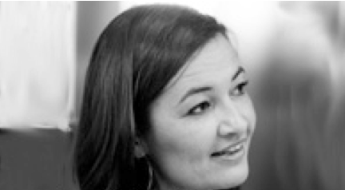

Dominique Morsomme
Dominique Morsomme est logopède. Elle est à la fois chercheuse et clinicienne. De 1992 à 2008, elle a exercé sa pratique aux Cliniques Universitaires Saint Luc (Bruxelles). De 1997 à 2009, elle a enseigné en faculté de Médecine dans la section logopédie (UCL). Depuis 2009, elle est logopède au Centre Hospitalier Universitaire de Liége où sa pratique se centre essentiellement sur les chanteurs. Elle coordonne le secteur phoniatrique au côté du Professeur Camille Finck. Depuis 2008, elle est chargée de cours en Faculté de Psychologie et des Sciences de l’éducation à l’ULg. Elle dirige l’unité: Logopédie de la Voix (Finalité Voix et Orthodontie).
Elle est entourée de deux chercheuses (Angélique Remacle et Pauline Larrouy) et de Gisèle Martinot, Maître de conférences. Elle bénéficie également du savoir faire de Martine Gaspar qui initie les élèves de la finalité au chant. Ses activités de recherche font l’objet d’études présentées annuellement dans des congrès internationaux (Philadelphie, « Voice Foundation », Londres « Choice for Voice », Paris « Société Française de Phoniatrie »). Elle collabore à différents travaux avec les universités belges (Anvers, Bruxelles), suédoise (Stockholm), brésilienne (Sao Paulo) et française (Marseille et Paris III). Ses sujets de prédilections sont la voix des chanteurs, celles des enseignants et la féminisation vocale. Aux côtés de Catherine Jansen , elle centre sa pratique logopédique en rééducation sur le plan essentiellement vocal. Elle réalise également les bilans logopédiques qu’ils soient chantés ou non.